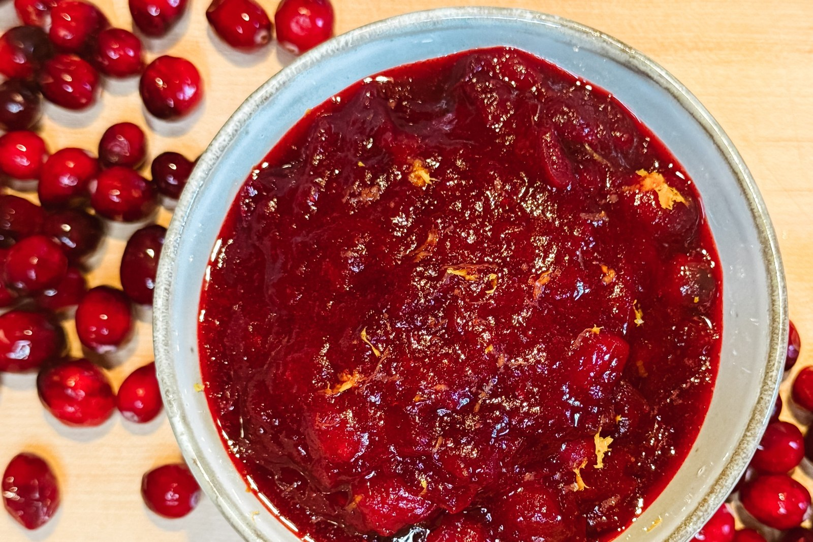

She’s the Goose

Thanksgiving · On the Side
A simple homemade cranberry sauce with fresh orange, a touch of maple syrup, and just enough cinnamon to bring everything together. Sweet, tart, and made for the Thanksgiving table.
Combine the ingredients. Add the cranberries, sugar, orange juice, orange zest (if using), cinnamon, and maple syrup to a medium saucepan.
Bring to a gentle boil. Place over medium heat, stirring occasionally until the sugar dissolves and the cranberries begin to pop.
Simmer. Reduce the heat slightly and simmer for 10–15 minutes, stirring occasionally. The cranberries will burst, and the sauce will begin to thicken.
Cool. Remove from the heat and allow the sauce to cool for 20–30 minutes.
Refrigerate. Transfer to a serving bowl or airtight container and refrigerate until ready to serve. The sauce will continue to thicken as it cools.
Serve. Enjoy chilled or at room temperature.
This is one of those Thanksgiving dishes that’s worth making from scratch. It takes just a few minutes, can be prepared ahead of time, and tastes so much better than anything from a can.
The orange brightens the cranberries, while the maple syrup and cinnamon add a little warmth without overpowering their natural tartness.
On the same table. Serve it with the apple cider roasted turkey.
Letters from She’s the Goose
A letter and a recipe from me, every Tuesday.
Thank you — look for a note to confirm.